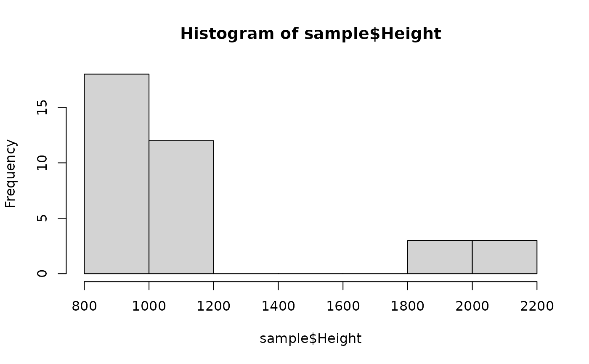
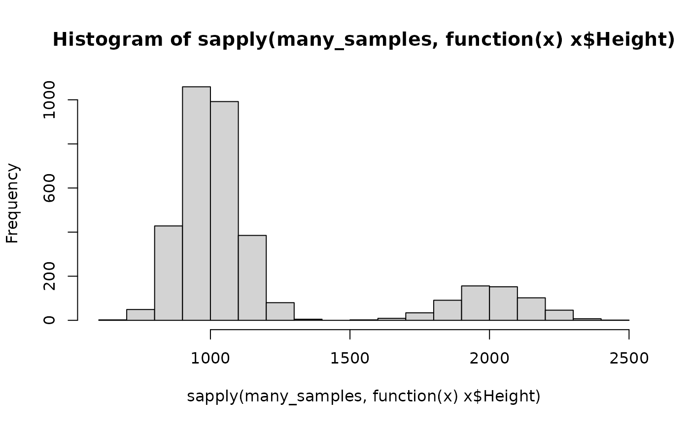

Defines a gamma model for peak height variability
gamma_model.RdDefines a gamma model for peak height variability
Arguments
- mixture_proportions
Numeric vector with the mixture proportion for each contributor.
- mu
Numeric. Expectation of a full heterozygote contributing allele peak height.
- cv
Numeric. Coefficient of variation of a full heterozygote contributing allele peak height
- degradation_beta
Numeric Vector of same length as mixture_proportions. Degradation slope parameters for each contributor. Defaults to 1 for each contributor (i.e. not degraded)
- LSAE
Numeric vector (named) with Locus Specific Amplification Efficiencies. See sample_LSAE. Defaults to 1 for each locus.
- model_settings
List. Possible parameters:
locus_names. Character vector.
detection_threshold. Numeric vector (named) with Detection Thresholds.
size_regression. Function, see read_size_regression.
stutter_model. Optionally a stutter_model object that gives expected stutter heights. See global_stutter_model.
Details
Define a gamma model for peak height variability with the parametrisation as described by Bleka et al. The model may then be used to sample DNA profiles using the sample_mixture_from_genotypes function. Alternatively, to sample many models and profiles in one go with parameters according to a specified distribution, the sample_mixtures function can be used.
References
Bleka, Ø., Storvik, G., & Gill, P. (2016). EuroForMix: An open source software based on a continuous model to evaluate STR DNA profiles from a mixture of contributors with artefacts. Forensic Science International: Genetics, 21, 35-44. doi:10.1016/j.fsigen.2015.11.008
Examples
# read allele frequencies
freqs <- read_allele_freqs(system.file("extdata","FBI_extended_Cauc_022024.csv",
package = "simDNAmixtures"))
gf <- gf_configuration()
# define the gamma model for peak heights
model <- gamma_model(mixture_proportions = 1, mu = 1000.,
cv = 0.1, model_settings = gf$gamma_settings_no_stutter)
# sample a single source profile (1-person 'mixture')
u1 <- sample_contributor_genotypes("U1", freqs, loci = gf$autosomal_markers)
sample <- sample_mixture_from_genotypes(u1, model)
# peaks follow a gamma distribution with an expected height of
# 1,000 for heterozygous alleles; 2,000 for homozygotes
hist(sample$Height)

# the gamma distribution is more obvious if many samples are taken
many_samples <- replicate(n = 1e2,
sample_mixture_from_genotypes(u1, model),
simplify = FALSE)
hist(sapply(many_samples, function(x) x$Height))
